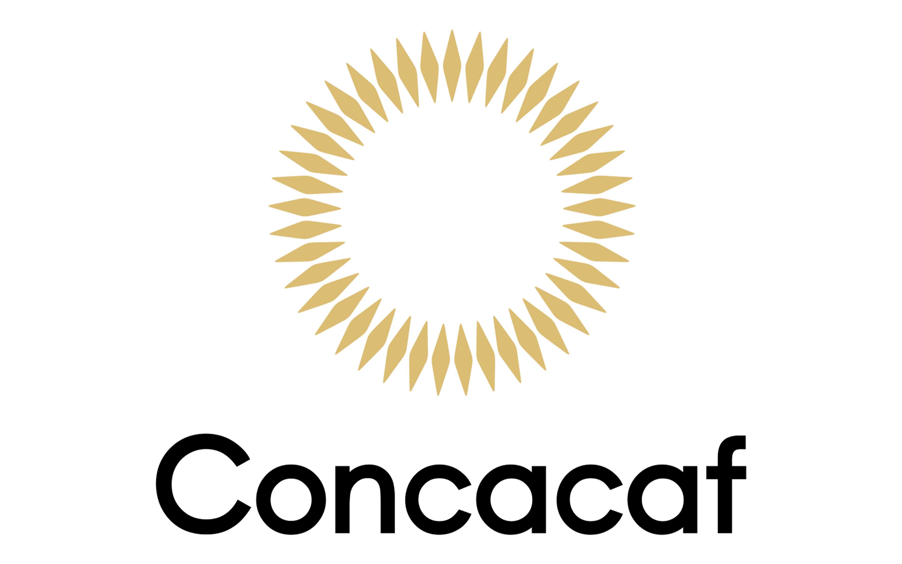
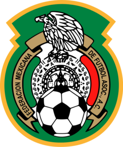
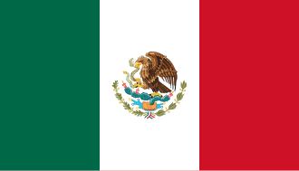
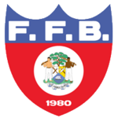
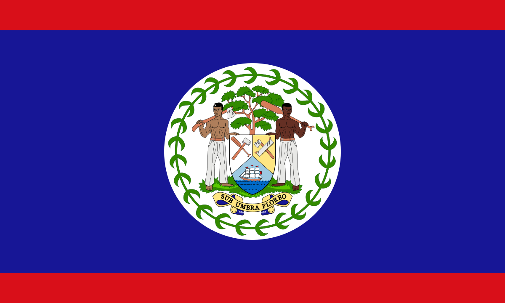
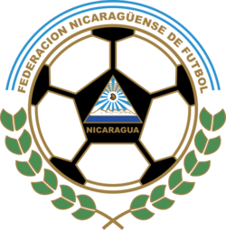
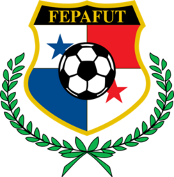
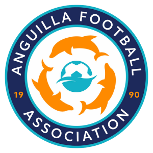
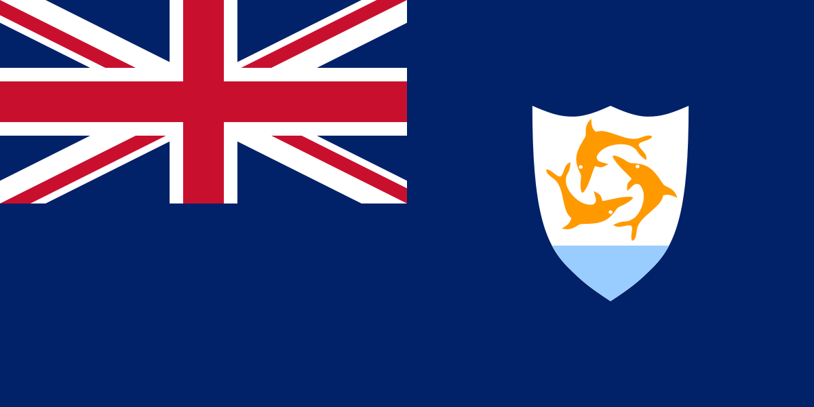
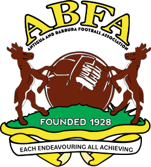

CONCACAF - Confederação de Futebol de Associação da América do Norte, Central e Caribe
A CONCACAF é o órgão que governa o futebol continental na América do Norte, América Central e o Caribe. Três entidades da América do Sul, as nações independentes da Guiana e Suriname, e a Guiana Francesa, também são membros.
.
Zona norte-americana (NAFU) - 3
Clubes do Canadá:


Clubes dos Estados Unidos:


Federação Mexicana de Futebol ( FMF)
Clubes do México:

.
Zona centro-americana (UNCAF) - 7
Federação de Futebol de Belize (FFB)
Clubes de Belize:

Clubes da Costa Rica:


Clubes de El Salvador:


Clubes da Guatemala:

Federação Nacional Autônoma de Futebol de Honduras (FENAFUTH)
Clubes de Honduras:

Federação Nicaraguense de Futebol (FENIFUT)
Clubes da Nicarágua:

Federação Panamenha de Futebol (FEPAFUT)
Clubes do Panamá:

.
Zona caribenha (CFU) - 31
Associação de Futebol de Anguila (AFA)
Clubes da Anguila:
Associação de Futebol de Antígua e Barbuda (ABFA)
Clubes da Antígua e Barbuda:

Federação de Futebol de Aruba (FFA)
Clubes do Aruba:
Associação de Futebol das Bahamas (AFB)
Clubes da Bahamas:
Associação de Futebol de Barbados (AFB)
Clubes do Barbados:

Associação de Futebol de Bermudas (AFB)
Clubes de Bermudas:
Federação de Futebol de Bonaire (FFB)
Clubes do Bonaire:
Associação de Futebol de Cuba (AFC)
Clubes de Cuba:

Clubes do Curaçau:
Associação de Futebol da Dominica (AFD)
Clubes da Dominica:

Associação de Futebol de Granada (AFG)
Clubes da Granada:

Liga Guadalupense de Futebol (LGF)
Clubes de Guadalupe:
Federação de Futebol da Guiana (FFG)
Clubes da Guiana:
Liga de Futebol da Guiana Francesa (LFG)
Clubes da Guiana Francesa:
Federação Haitiana de Futebol (FHF)
Clubes do Haiti:
Associação de Futebol das Ilhas Caiman (CIFA)
Clubes das Ilhas Caimã
Federação de Futebol das Ilhas Virgens Americanas (USVISA)
Clubes das Ilhas Virgens Americanas:
Associação de Futebol das Ilhas Virgens Britânicas (BVIFA)
Clubes das Ilhas Virgens Britânicas:

Federação de Futebol da Jamaica (JFF)
Clubes da Jamaica:
Liga de Futebol de Martinica (LFM)
Clubes da Martinica:

Clubes de Monserrate:
Federação Porto-Riquenha de Futebol (FPF)
Clubes de Porto Rico:
Federação Dominicana de Futebol (FDF)
Clubes da República Dominicana:

Associação de Futebol de Santa Lúcia (SLFA)
Clubes de Santa Lúcia:
Associação de Futebol de São Cristóvão e Neves (SKNFA)
Clubes do São Cristóvão e Neves:
Comitê de Futebol de São Martinho Francês (CFSMF)
Clubes do São Martinho Francês:

Associação de Futebol de São Martinho Neerlandês (AFSMN)
Clubes do São Martinho Neerlandês:
Federação de Futebol de São Vicente e Granadinas (SVGFF)
Clubes de São Vicente e Granadinas: